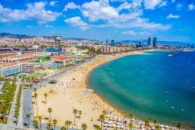
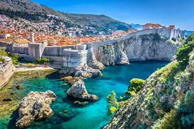

Best Vacation Spots in the World
As an avid traveler, I have been to many cities so do not feel I am forgetting your favorite spot. This is my opinion and maybe I will see your city and change my list. Today I will be focusing on European cities, and from large to small, warm to cool, there is marvels across the entire continent.
Barcelona
The largest city in Catalonia is definietly something to marvel at. There is plenty of activities to do, whether that includes going to the beautiful "playas", indulging in Spanish tapas in restaurants and fresh juice at food markets, to watching the famous FC Barcelona Soccer team, this city has something for everyone. The people are lovely and it is my personal favorite city in the entire continent.
London

One of the largest cities in the world, London is a cultural hub with so many different ways to enjoy it. These activities include going to see Buckingham Palace and exploring the history of the Royal Family, having meals from different countries every day, and going to theatres. London is very similar to New York City in the sense that there is several different parts with specific niches.
Dubrovnik
I consider Dubrovnik a hidden gem. With a population of only 41,000, it wouldn't come to the mind of many as a European gem. However, its beaches and proximity to the water make it a marvel. You can spend entire days on the beaches or swimming and boating on the pristine Croatiion waters. As a bonus, the locals are super hospitable, the nightlife is the life of the party and the food is amazing.